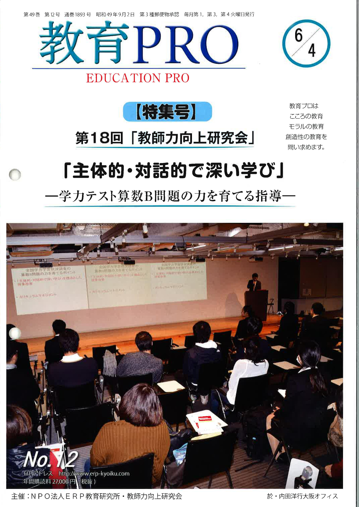
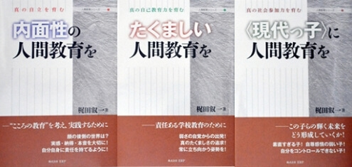
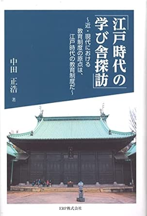
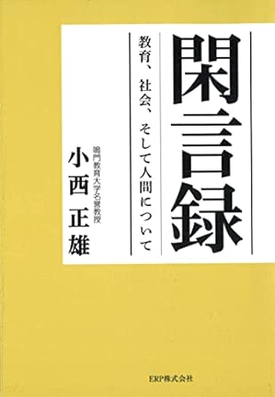
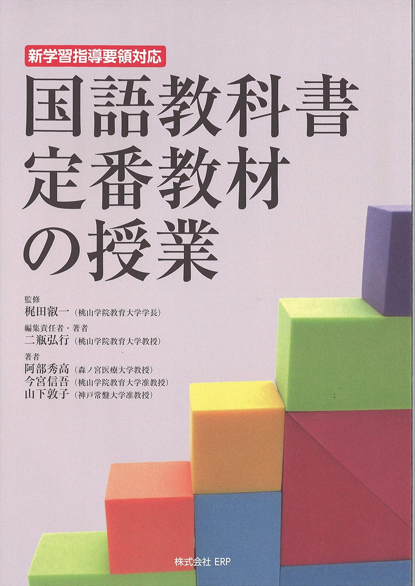
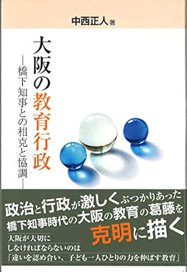
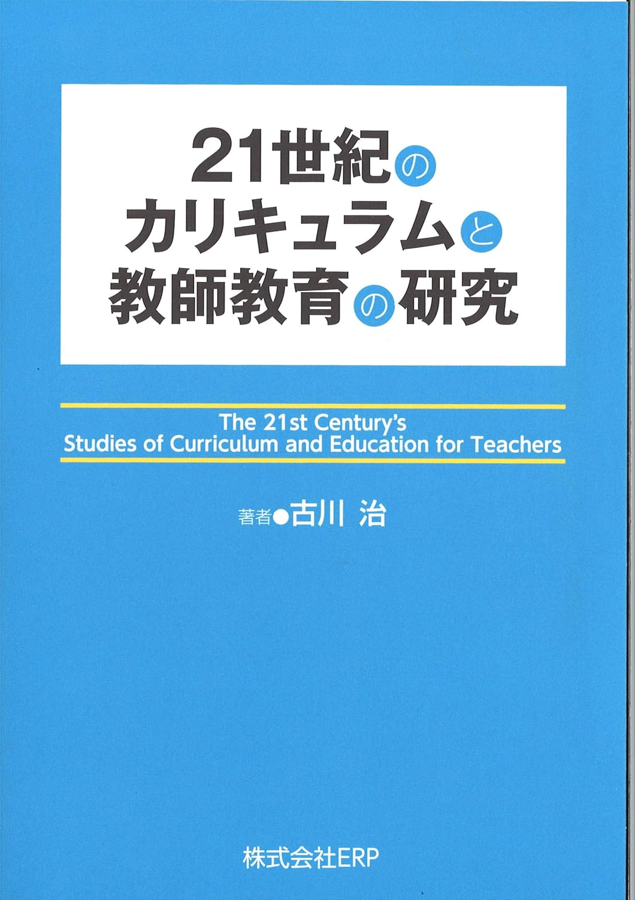
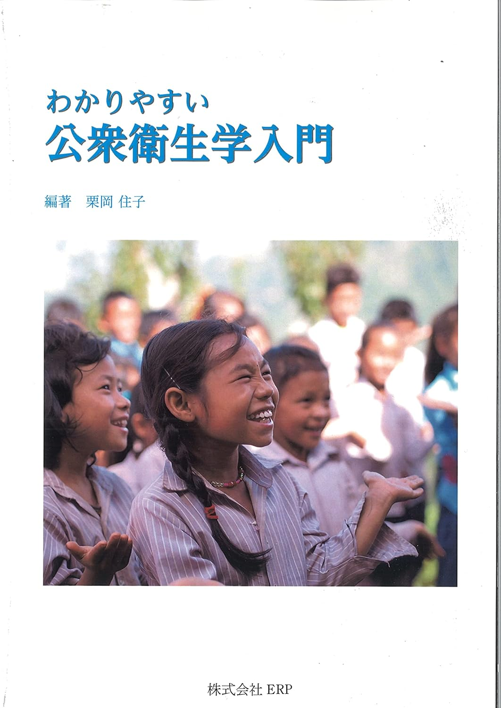
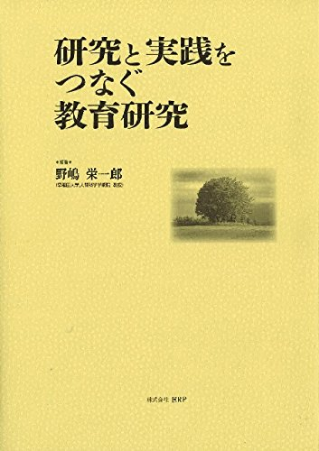

PUBLICATIONS
出版教材
情報誌
教育情報誌「教育PRO」

一般教養書
日本の感性「和魂ルネッサンス」

「内面性の人間教育を」
「たくましい人間教育を」
「＜現代っ子＞に人間教育を」

「江戸時代の学び舎探訪」
～近・現代における教育制度の原点は、江戸時代の教育制度だ～

「閑言録 教育、社会、そして人間について」

「国語教科書定番教材の授業」
―新学習指導要領対応―

「大阪の教育行政」
―橋下知事との相克と協調―

「21世紀のカリキュラムと教師教育の研究」

「わかりやすい公衆衛生学入門」

「研究と実践をつなぐ教育研究」

ARPブックレットシリーズ
「＜いのち＞の自覚と教育」
「知っておきたい国語教育の＜ことば＞」
「問われているのは人権感覚と市民感覚」
―いじめ・「体罰」そして教育委員会制度―
「＜いじめ問題＞と道徳教育」
―学級の人間関係を育てる道徳授業―
「言葉の力と言語活動」
「英語教育の核心」
―小学校英語の教科化の流れのなかで―
「生徒が＜詩人＞になるとき」
「言葉の力を鍛える俳句の授業」
―ワンランク上の俳句を目指して―
「指導者と生徒が光かがやく心のトレーニング」
「言葉力の育成」
―特に国語科では―
「学校経営とリーダーシップ」
「初等科音楽基礎基本と指導法」
～ここがポイント～
「心理学を生かしたクラスづくり」
「音楽教育から地域の文化力へ」
―イメージをつむぐ―
「初等科・中等科音楽教育指導法」
～歌唱・合唱の系統性に視点をおいて～
「いよいよ始まる2020年学習指導要領改訂」
どうなるどうする教育改革
「定番教材を用いた＜ことばの力＞を育てる国語科指導」
「教育社会学」
「21世紀型能力を育成する教員をめざして」